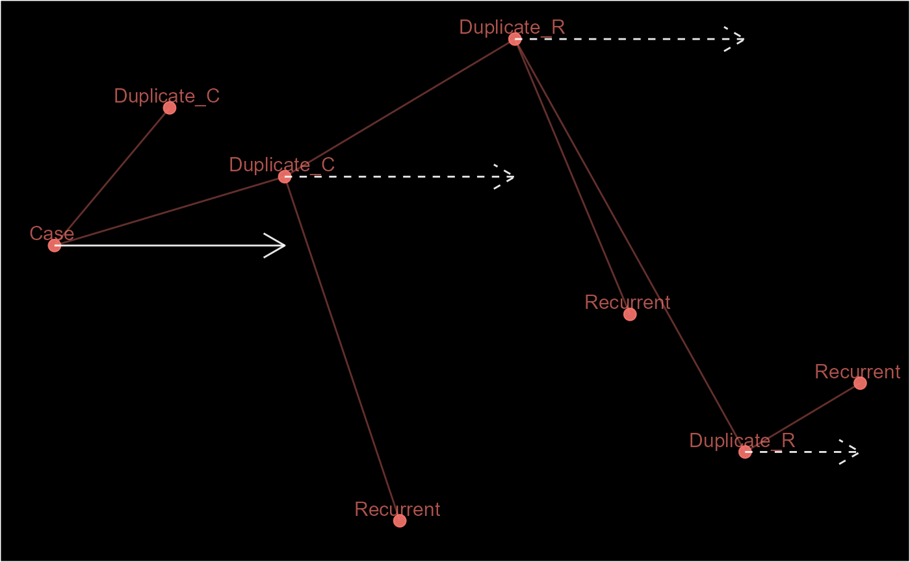

delink(x, lgk, ...) # S3 method for epid delink(x, lgk, ...) # S3 method for pane delink(x, lgk, ...) # S3 method for pid delink(x, lgk, ...)
| x | |
|---|---|
| lgk |
|
| ... | Other arguments. |
#> [1] "E.1 (C)" "E.1 (D)" "E.1 (D)" "E.1 (D)" "E.1 (D)" "E.1 (D)" "E.1 (D)" #> [8] "E.1 (D)"#> [1] "E.1 (C)" "E.1 (D)" "E.3 (S)" "E.1 (D)" "E.1 (D)" "E.1 (D)" "E.1 (D)" #> [8] "E.8 (S)"#> Warning: `l` and `r` have different classes. They may need to be reconciled.unlinked_pn <- delink(pn, pn@.Data == 5)#> Warning: An index/reference record has been unlinked!pn; unlinked_pn#> [1] "PN.1 (I)" "PN.1 (D)" "PN.1 (D)" "PN.1 (D)" "PN.5 (I)" "PN.5 (D)" "PN.5 (D)" #> [8] "PN.5 (D)"#> [1] "PN.1 (I)" "PN.1 (D)" "PN.1 (D)" "PN.1 (D)" "PN.5 (S)" "PN.6 (S)" "PN.7 (S)" #> [8] "PN.8 (S)"pd <- links(list(c(1, 1, 1, NA, NA), c(NA, NA, 2, 2, 2))) unlinked_pd <- delink(pd, pd@pid_cri == 1)#> Warning: An index/reference record has been unlinked!pd; unlinked_pd#> [1] "P.1 (CRI 001)" "P.1 (CRI 001)" "P.1 (CRI 001)" "P.1 (CRI 002)" #> [5] "P.1 (CRI 002)"#> [1] "P.1 (No hits)" "P.2 (No hits)" "P.3 (No hits)" "P.1 (CRI 002)" #> [5] "P.1 (CRI 002)"# A warning is given if an index record is unlinked as this will lead to seemly impossible links. ep2 <- episodes(1:8, 2, episode_type = "rolling") unlinked_ep2 <- delink(ep2, ep2@sn %in% c(3, 5))#> Warning: An index/reference record has been unlinked!